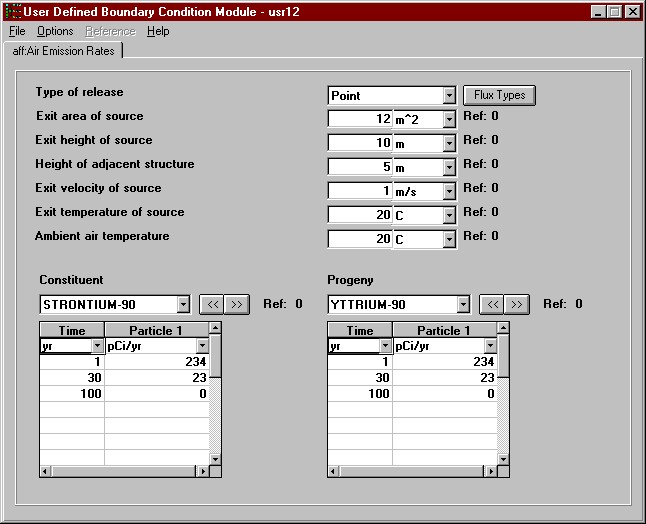

Fig: Flux Types
Use this module only if you know the constituent air emission rates. The constituent air emmisons, at user provided points in time, are entered directly through the interface. This module does not compute the ingrowth of progeny because the user is assumed to know everything about the source, including progeny emissions. Therefore, this module assumes that the progeny emissions will be input along with the parent emissions.
For more information about the file specification that this module produces see AFF Specifications on the FRAMES web site.
AFF Boundary Condition Parameters
Type of release
Select either a point or area release type to be modeled. Click the down arrow key and then click the appopriate option. Point source releases occur through a relatively small area such as a stack, vent, or cooling tower. Area source releases occur from a contaminated surface area, or through a surface area from contamination under the surface. Typical area sources are landfills, ponds, spills, etc.
Exit area of source
Units: m^2 (square meters)
Range: Greater than 0.
Enter the exit area of the point or area source. The exit area is the area of the source through which constituent is released.
Exit height of source
Units: m (meters)
Range: Greater than 0.
For point sources, enter the height of the release. For a stack release, this height is measured from the base to the top of the stack. For a vent this parameter is measured from the base of the structure to the vent.
Height of adjacent structure
Units: m (meters)
Range: Greater than or equal to 0.
For point sources, give the maximum height in meters of the building with the vent or of structures immediately next to stacks. This parameter is used to estimate how buildings, influence the initial dispersion and plume rise. If there are no buildings, or for cooling towers not located in the wake of an adjacent building, this value is 0.0.
Exit velocity of source
Units: m/s (meters per second)
Range: Greater than or equal to 0.
For point sources, enter the vertical component of the exit velocity. Enter 0.0 for horizontal releases.
Exit temperature of source
Units: C (degrees centigrade)
Range: None
For point sources, enter the temperature of the release. If the release is not heated, enter the annual average air temperature.
Ambient air temperature
Units: C (degrees centigrade)
Range: None
For point sources, enter the annual average atmospheric temperature. An annual summary of the Local Climatological Data (LCD) for the nearest representative national weather service station should be obtained, because they contain the average annual air temperature, as well as other data needed for atmospheric modeling. They are published by the Environmental Data Service, NOAA, National Climatic Center (NCC) in Asheville, North Carolina. The annual average air temperature can be found in the "Normals, Means, and Extremes" table of the LCD.
Flux Types
Selecting the "Flux Types" button allows for the specification of the physical form of the constituents being released. The user may define up to four flux types - Gas, Particle 1, Particle 2 and Particle 3. All four or a minimum of one must be selected for analysis. The default flux type is a release of particulates having a radius of 0.03 um and a particle density of 1.5 g/cm3. To turn on other particulate categories, select the appropriate check box and either accept or modify the default particle radius and density (3.0 um and 1.5 g/cm3 for "Particle 2," and 10.0 um and 1.5 g/cm3 for "Particle 3"). If any constituents in this scenario are released as a gas, make sure to select the "Gas 1" check box.
Reactive Fraction
Units: fraction
Range: 0 to 1 Inclusive
Defines the fraction of the gas that is reactive. Mostly used for Radon emissions.
Density
Units: g/cm^3 (grams per cubic centimeter)
Range: Greater than 0.
Defines the ratio of suspended mass to the volume of air. Input a density for each selected particle.
Radius
Units: um (micrometers)
Range: Positive integer greater than 0.
Defines the radius of the suspended particle. Input a radius for each selected particle.
Fig: Flux Types
Constituent
Time
The list of constituents is identified by a 'Constituent' database module. Each of the constituents selected for analysis in the 'Constituent' module appears in this drop-down box. Use the drop down-box or the « » buttons to make differeent constituent selections. As a new selection is made the spreadsheet closest to the drop-down box is updated with the appropriate time series. If the selected constituent has progeny and if the "Include Progeny" option is checked under the "Options" menu, then an identical set of controls will appear to the left of the parent. The progeny will be displayed as the parent is displayed but only those progeny that relate to the displayed parent are available for data entry.
Units: yr (years)
Range: Greater than or equal to 0.
A minimum of two times must be entered. Times must be entered in chronological, ascending order (i.e., 0, 5, 10 not 0, 10, 5). The spreadsheet rows must be used consecutively. Anything below a skipped time row will be deleted. A point in time at which a measurement/estimate is given should be relative to all other times entered in the interface and the overall simulation.
Particle and Gas Flux
Units: g/yr (grams per year) or pCi/yr (picocuries per year)
Range: Greater than or equal to 0.
Mass fluxes need to be entered for each constituent and progeny if appropriate. The mass flux categories available depend on the settings made under Flux Types. Items left blank in rows that have a valid time defined are filled with zeros. All rows after and including the first row with an invalid time are ignored and cleared.

Fig: Constituent